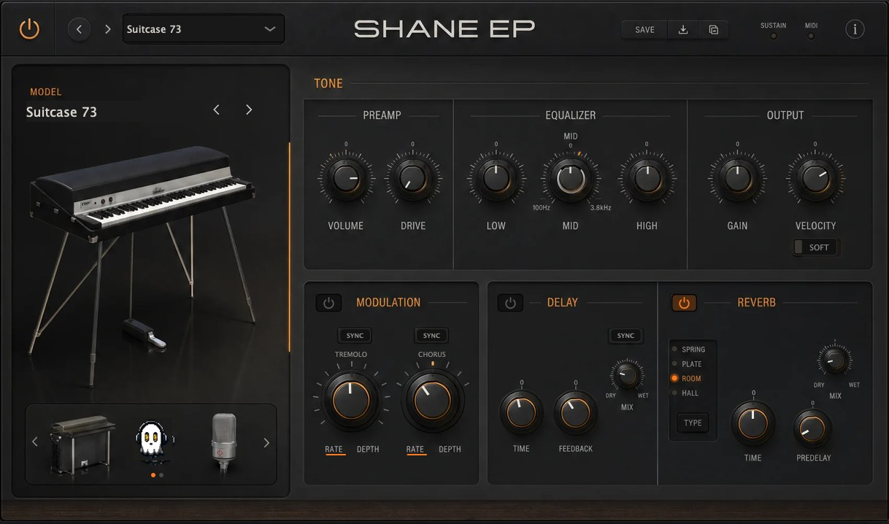

Why use it
What it doesElectric piano that barks when you dig in and turns bell-like when you back off.
Reach for it whenR&B and neo-soul chords, ballad verses, lo-fi beds.
What makes it differentPickup model rather than FM, so velocity moves the tone continuously. Note onset 1-7 ms. Tremolo, chorus, phaser, amp and reverb built in.
September sale: 30% off until September 30 - use code SEPT30 at checkout.
A tine electric piano. Not an FM approximation — a damped sine driven through an offset pickup, differentiated the way a real pickup reads a moving tine. That differentiation and the pickup offset are where the bark comes from, and it's why it opens up when you dig in instead of just getting louder.
Play it soft and it's a bell. Play it hard and it barks.
CONTROLS · BARK · CHARACTER · TONE · DECAY · RELEASE · PREAMP DRIVE · AMP · HAMMER NOISE · TINE BAR · TONE BAR · SYMMETRY · VELOCITY CURVE · VEL SENS · EQ Low · Mid Freq · Mid Gain · High · TREMOLO Rate · Depth · Pan Sync · CHORUS · PHASER · WAH each with rate, depth and tempo sync · COMP Amount · Mix · DELAY Time · Feedback · Mix · Sync · REVERB Type (Room · Hall · Plate · Spring) · Time · Predelay · Mix · VOICINGS Crystal · Groovy · Luxy · Phat
WHAT'S NEW IN 1.6
· Onset latency: the bundled samples had 350-380 ms of pre-roll - trimmed to under 7 ms
· Rebuilt, re-signed and notarized for macOS (Universal) and Windows
REGISTRATION
· The plug-in runs unrestricted for a 3-day trial from first launch.
· Your licence key is on your Gumroad receipt and on the download page.
· Paste it into the plug-in once — it needs internet that one time, then works offline.
· Message me on Gumroad if you need it reset for a new machine.
FORMATS macOS AU + VST3 + AAX (Pro Tools), Universal (Intel + Apple Silicon) Windows VST3 + AAX (Pro Tools), 64-bit
INSTALL — WINDOWS 1. Unzip. 2. Copy "Shane EP.vst3" to: C:\Program Files\Common Files\VST3 3. Restart your DAW and rescan plugins.
INSTALL — macOS 1. Open the .pkg installer and follow the prompts. 2. Pick the formats you want (VST3 / AU / AAX). 3. Restart your DAW and rescan plugins.
Signed with a Developer ID and notarized by Apple — no security warnings, no Terminal commands.
Stuck, or something sounds off? Message me — I answer every one.
UPDATES
Buy once, updated forever. Every future build is free to you — Gumroad emails you when there is a new one. No subscription, no upgrade fee, no re-purchase.
FOLLOW ALONG
New plugins and what goes into them: